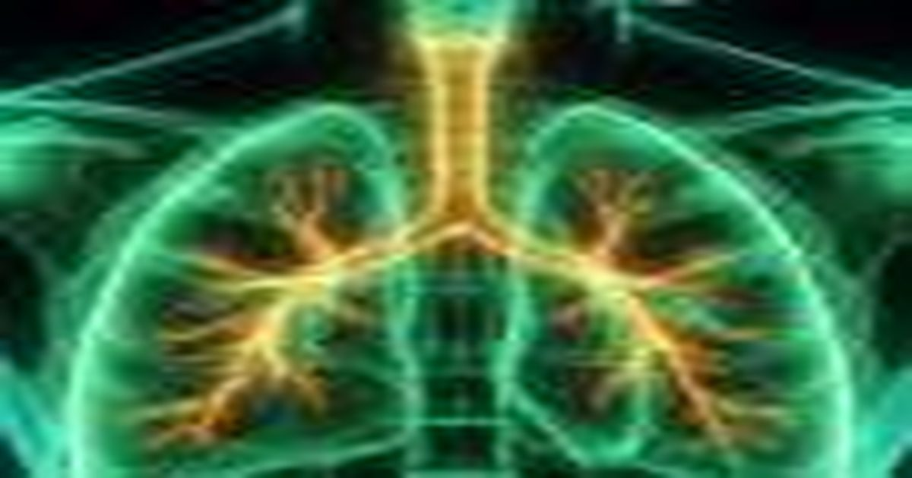

Липидный дисбаланс в макрофагах как триггер фиброза: что показали мыши
Новое исследование UCLA Health на мышах выявило, что нарушение обмена липидов в альвеолярных макрофагах может запускать фиброз легких. Понимание этого механизма помогает увидеть общие принципы работы иммунных клеток в тканевом ремонте и может быть актуально для кожи.
Роль альвеолярных макрофагов в защите тканей
Альвеолярные макрофаги являются первыми защитниками дыхательной поверхности, они поглощают частицы, бактерии и продукты распада собственных клеток. В норме эти клетки поддерживают стерильность альвеол и участвуют в восстановлении эпителия после микротравм. Их способность переключаться между про‑ и анти‑воспалительным фенотипами обеспечивает баланс между защитой и ремонтом.
Когда макрофаги получают сигналы о повреждении, они выделяют цитокины и факторы роста, привлекая фибробласты к месту травмы. Этот процесс строго регулируется, чтобы избыточное накопление соединительной ткани не нарушало газообмен.
Исследование на мышах показало, что нарушение внутриклеточного липидного обмена сбивает эту регуляцию: клетки теряют способность своевременно прекратить выделение профибротических медиаторов.

Как липидный дисбаланс меняет поведение клеток
Липиды служат не только источником энергии, но и строительным материалом для мембран и сигнальными молекулами. В макрофагах нарушение синтеза или расщепления определенных классов липидов приводит к накоплению токсичных промежуточных продуктов.
Эти продукты активируют внутриклеточные пути, отвечающие за воспаление и фиброз, например, сигнальные каскады, управляющие производством коллагена. В результате макрофаги начинают работать как хронические стимуляторы фибробластов.
Важно отметить, что подобные сдвиги в липидном профиле могут возникать под воздействием окислительного стресса, курения или метаболических нарушений, что делает механизм актуальным для широкого круга факторов риска.

Параллели с коже: макрофаги и фиброз кожи
В коже также живут резидентные макрофаги, которые контролируют целостность дермы и реагируют на повреждения. Принципы их переключения фенотипов во многом повторяют процессы в легких.
Нарушение липидного обмена в кожных макрофагах может способствовать избыточному синтезу коллагена и формированию рубцовой ткани после травм или воспалений. Понимание общих путей открывает перспективы для кросс‑дисциплинарных подходов.
Однако прямые доказательства переноса данных с модели мышиного легкого на человеческую кожу пока отсутствуют, поэтому любые выводы о терапии должны основываться на дополнительных исследованиях.
Направления будущих исследований и вопросы к специалисту
Следующие шаги ученых — определить конкретные липидные виды, чье накопление критично для запуска фиброзного каскада, и проверить, можно ли их фармакологически корректировать.
Также планируется изучить, как системные метаболические изменения, например ожирение или диабет, влияют на липидный профиль макрофагов в разных органах.
Для практикующих дерматологов и косметологов актуальным остается вопрос: какие неинвазивные маркеры могут сигнализировать о раннем липидном дисбалансе в коже до появления видимых изменений?
Как обсудить результаты исследования с пульмонологом
Поскольку работа выполнена на мышах, клинических протоколов на её основе пока не существует. На приёме у пульмонолога уместно спросить, актуальны ли для вашего случая маркеры липидного обмена в макрофагах, ведёт ли клиника наблюдение за подобными показателями и есть ли доступ к исследованиям, проверяющим подобные механизмы у человека. Врач оценит стадию заболевания, сопутствующую патологию и назначенную терапию, чтобы понять, имеет ли смысл учитывать новые данные при корректировке плана наблюдения.
Подготовьте выписки из истории болезни, результаты спирометрии, КТ и анализов за последний год — это ускорит разбор ситуации. От итогов зависит не только выбор тактики, но и возможность включения в реестры пациентов для перспективных исследований. Самостоятельная интерпретация механизма из модели на грызунах не заменяет диагностику: генетика, образ жизни, возраст и коморбидность определяют, насколько открытый путь актуален именно в вашем организме.
Коротко: Коротко: липидный дисбаланс в макрофагах сбивает контроль над фиброзом, что продемонстрировано на модели мыши. Аналогичные процессы могут происходить в коже, но клинические данные пока ограничены. Дальнейшие работы уточнят терапевтические цели.
Как вы считаете, стоит ли уже сейчас обращать внимание на липидный профиль кожи при выборе уходовых средств?